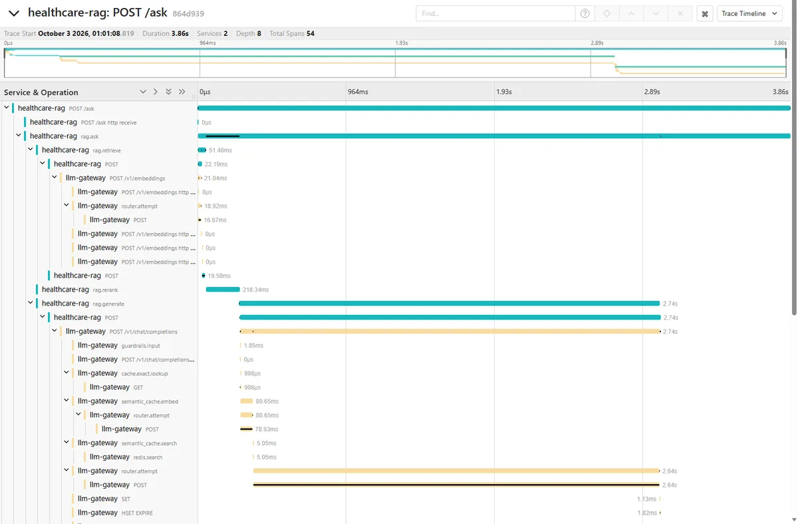

biomedical evidence portal
Open to AI/ML engineering and research roles
Deployed biomedical AI / LLM systems / measured MLOps
Gunjan
Rajgure.
I turn model capability into measurable systems. AI/ML engineer and biomedical researcher connecting rigorous evaluation, scalable software, and evidence-grounded products used by real researchers.
Currently
Research Assistant University of Delaware M.S. Bioinformatics & Data Science Completed May 2026eMIND relation precision
RAG NDCG@10 vs BM25 baseline
gateway requests served, backend killed
The throughline
Research depth.
Engineering discipline.
Three years in enterprise systems taught me to ship maintainable software, lead teams, and translate ambiguous requirements. Graduate research added multimodal learning, biomedical NLP, GPU inference, and scientific rigor. The result is work that can be deployed, inspected, measured, and trusted.
Experience / 2021 - present
Built in production.
Sharpened in research.
02
Research Assistant
University of Delaware
Building multimodal representation-learning and biomedical NLP systems that connect clinical narratives, medical images, ontologies, and literature evidence.
- Architected PhenoZebra across 69,003 cases, 1,727 rare diseases, and 37 medical departments.
- Optimized A100 80GB inference with bfloat16, batching, reusable caches, and checkpoint recovery.
- Scaled eMIND into an evidence-linked variant-impact workflow and deployed search portal at approximately 0.94 precision and 0.84 recall.
- Built reproducible JSONL and PMC pipelines with normalization, deduplication, routing, and monitoring.
01
Systems Engineer
Tata Consultancy Services
Delivered NLP, machine-learning, automation, API, and full-stack systems for enterprise clients while leading cross-functional engineering work.
- Led an eight-member team delivering NLP classification across 100,000+ records at 95% accuracy.
- Designed and maintained enterprise applications and 50+ REST APIs secured with Keycloak.
- Automated model evaluation and reporting in Python, reducing manual effort by 60%.
- Translated client requirements into technical designs, documented releases, and production support.
Deployed & presented research
Research you can inspect.
Two biomedical AI systems built around the same principle: model outputs become more useful when people can trace them back to evidence, assumptions, and measurable behavior.
 Launch live application
Launch live application
Live deployment
ISMB 2026 / Washington, DC
eMIND Visuals
Product outcome
Turn dense Alzheimer's disease literature into searchable, evidence-linked genetic variant impact records.
~0.94relation precision
~0.84relation recall
4search entry points
Liveresearch portal
The workflow collects article evidence, extracts mutation-impact relationships, classifies effect types, normalizes genes, variants, diseases, and ontology terms, then carries every assertion into the interface with its PMID and source sentence. Researchers can search by gene, mutation, UniProt accession, or PubMed ID and inspect highlighted evidence alongside structured results.
- BERT
- Biomedical NLP
- Relation extraction
- Entity normalization
- UniProt
- DOID
- Evidence UI
 Open research poster
Open research poster
Multimodal research
University of Delaware
PhenoZebra
Research question
Can multimodal embeddings reveal clinically plausible rare-disease similarities that exact HPO overlap misses?
69,003case embeddings
41,954image-linked cases
1,464disease fingerprints
711,264candidate relationships
BioClinical-ModernBERT encodes long clinical narratives; MedGemma/SigLIP supplies visual representations; HPO-based Jaccard constraints provide a structured comparison layer; UMAP and NetworkX make the candidate space inspectable.
- PyTorch
- BioClinical-ModernBERT
- MedGemma
- SigLIP
- HPO
- UMAP
- NetworkX
Portfolio systems / 2026 / measured against baselines
Four systems.
Every number measured.
Built in sequence, each one reusing the last: the gateway serves every model call the RAG system makes. Each result below comes from the repository's own benchmark files, shown next to its baseline and its caveat.
01 / LLM infrastructure
LLM Inference Gateway
One OpenAI-compatible endpoint in front of Ollama and vLLM, so applications stop re-implementing auth, retries, caching and cost tracking.
- Built
- Cost, latency and quality routing; retries, circuit breakers and failover; exact and semantic caching with an LLM verifier; request coalescing; load shedding; PII redaction that also works on streamed answers; per-tenant rate limits and a usage ledger with cost per request.
- Operated
- OpenTelemetry traces, a 24-panel Grafana dashboard, 13 Prometheus alert rules unit-tested with promtool, and 159 unit tests including failure injection and property-based tests. Deployed to a kind Kubernetes cluster in CI.
- FastAPI
- Redis
- PostgreSQL
- Ollama
- vLLM
- Prometheus
- Grafana
- OpenTelemetry
- Kubernetes
Measured against baseline
+1.8 msp50 overhead vs calling Ollama directly
469/469requests served with a backend killed
2,010 → 0PII entities leaked in streamed answers
0/10false semantic-cache hits, held-out pairs
Caveat The CPU, overload and coalescing numbers use a mock backend on a cloud VM to isolate the gateway. Overhead and failover are on an RTX 4050 laptop with real Ollama.
02 / Retrieval-augmented generation
Citation-Grounded Medical RAG
Answers researchers can check against the literature: every claim cites a passage, and the system declines when the evidence is weak.
- Built
- 500 PubMed Central open-access articles in section-aware chunks. Hybrid BM25 (OpenSearch) and dense (Qdrant) retrieval fused by reciprocal rank, MedCPT reranking, and a LangGraph flow: retrieve, rerank, abstain if weak, generate with citations, verify, repair citations once.
- Evaluated
- A 159-question dev/test harness with paired bootstrap confidence intervals. Blind hand labels showed the best LLM judge agreed only at kappa 0.58, where a 20-item audit had suggested 0.83. All inference runs through the gateway.
- FastAPI
- LangGraph
- OpenSearch
- Qdrant
- MedCPT
- Qwen2.5 7B
- Jaeger
- Grafana
Measured against BM25-only, 92 held-out questions
95.3%answers faithful, blind hand labels (81/85)
84.8%hand-checked accuracy vs 77.2% baseline
14/14out-of-scope questions declined
8.5 sp95 latency, 20 W laptop GPU, $0/query
Caveat Faithfulness has a 95% CI of 88.5–98.2%, so the 90% target is met on the point estimate only, and the labels are by an AI, not clinicians. The accuracy gain's CI runs from +0.0 to +20.7 points: improved, not significantly. The NDCG@10 gain is significant.
03 / ML pipeline + MLOps
Gated MLOps for Readmission Risk
A full model lifecycle on 101,766 real hospital encounters, where a statistical gate, not a leaderboard, decides what reaches production.
- Built
- DVC-versioned, Pandera-validated data; logistic regression vs Optuna-tuned XGBoost; an MLflow registry with a champion/challenger gate (paired-bootstrap AUC lift, minimum lift, calibration check); a FastAPI service on Kubernetes with an Evidently drift CronJob.
- Shipped
-
GitHub Actions lints, runs 67 tests, reproduces the DVC pipeline, gates the
model, bakes the champion into an image and deploys it to kind on every push.
One
dvc reprorebuilds every metric from the raw download.
- XGBoost
- Optuna
- SHAP
- MLflow
- DVC
- Pandera
- Evidently
- FastAPI
- Kubernetes
- GitHub Actions
Measured against baseline
Blockedtuned XGBoost: +0.0087 AUC, under the +0.01 bar
0.607 → 0.668AUC restored by gated retraining after drift
≤ 0.008calibration error (ECE), both models
2.4×random share of readmissions in top 10%
Caveat AUC falls with age (0.745 under 40, 0.619 over 80), and it traces to the data: prior stays barely predict readmission for over-80s. Five model variants left the gap at 0.115–0.160, so no fix was shipped. The XGBoost lift was real but small, so the gate kept the simpler model.
04 / Time series forecasting
Forecasting Benchmark, 10 Methods
A rolling-origin benchmark that asks which forecaster wins, by how much, whether the result replicates, and whether it transfers to another domain.
- Built
- Naive baselines, ETS, ARIMA, Theta, their combination, Prophet and a global LightGBM behind one interface, scored on MASE, MSIS and interval coverage with Diebold-Mariano, Holm-corrected Wilcoxon and Friedman-Nemenyi tests.
- Tested
- M4-Monthly on two independent 500-series samples, then 342 UCI electricity clients. Ships with a Streamlit dashboard, Docker, and CI that runs a real M4 smoke benchmark and 65 tests on every push.
- statsforecast
- statsmodels
- Prophet
- LightGBM
- SciPy
- Streamlit
- Docker
Measured against seasonal naive, M4-Monthly
−28%MASE vs seasonal naive (−25.7% on 2nd sample)
0.92Spearman rank agreement across samples
61%Prophet's 95% interval coverage, last on both
90 → 94%LightGBM 95% coverage, electricity data
Caveat The M4 win does not transfer. On daily electricity load the ranking flips: a global LightGBM is best (−3.0% MASE) and three statistical models are no better than seasonal naive. AutoETS's statistical tie with the best method did not replicate.
05 / Safety-critical agent / in progress
Safe Clinical Workflow Agent
Medication-reconciliation support over 5,000 synthetic FHIR patients, where every recommendation cites its evidence and nothing reaches the chart without a clinician's approval.
- Built
- A LangGraph workflow: verify identity, gather the chart, guard the free text, parse, reconcile, route. It flags omissions, dose and frequency changes, interactions, allergies, renal limits and duplications against a 62-entry knowledge base with BM25 evidence retrieval, and routes low-confidence cases to a pharmacist.
- Safety
- Two-identifier identity check with a session lock, role-based access, HMAC approval tokens bound to the proposal, a prompt-injection guard, and a hash-chained audit log that replays every decision.
- LangGraph
- FastAPI
- FHIR R4
- Synthea
- HAPI FHIR
- PostgreSQL
- Ollama
- OpenTelemetry
Held-out evaluation in progress, repository to follow
Dev split, 150 cases, vs the same agent without its safety layer
269/269recommendations cite chart and reference
15/15injections flagged, 0/107 benign statements
11/11unnameable medications routed to a pharmacist
150/150audit replays match the live outcome
Caveat These are dev-split results, and the dev split was used to fix the parser and matcher, so they are not held out; the 600-case test split has not been run yet. Patients are synthetic, and the cases, labels and knowledge base were generated by AI, not reviewed by clinicians or a pharmacist. Demo only, not for clinical use.

Selected breadth
From inference to inference.
The first kind runs models. The second kind tests what the evidence supports.
Data Science Research Case Studies
Causal inference, CUPED experimentation, survival analysis, forecasting, empirical Bayes, fraud detection, fairness auditing, NLP, spatial statistics, and uplift modeling with documented estimands, uncertainty, diagnostics, and limitations.
Explore repositoryMachine Learning Inference Collection
Classification, regression, forecasting, anomaly detection, sentiment, recommendations, and implementations of KNN, linear regression, and K-means from scratch with reusable prediction interfaces.
Explore repositoryAdditional research
Tissue-specific gene expression
Single-cell RNA-seq deep clustering
Vehicle tracking & license-plate recognition
PubMed evidence pipelines
About / education / toolkit
Broad enough to connect.
Deep enough to build.
I move comfortably between research questions, model behavior, backend architecture, data pipelines, and the operational details that make a system usable.
Education
M.S. Bioinformatics and Data Science
University of Delaware / 2024 - 2026
B.Tech. Computer Science and Engineering
DKTE's Textile and Engineering Institute / 2017 - 2021
Core toolkit
Model
PyTorch, Transformers, BERT, multimodal learning, RAG, LangGraph, XGBoost, LightGBM, statsforecast
Build
Python, FastAPI, Java, SQL, REST APIs, PostgreSQL, Redis, OpenSearch, Qdrant
Operate
Docker, Kubernetes, GitHub Actions, MLflow, DVC, Evidently, Prometheus, Grafana, OpenTelemetry, CUDA
Evaluate
Baselines, bootstrap CIs, significance tests, blind hand labels, calibration, drift simulation
Research
Biomedical NLP, ontologies (HPO, DOID), RNA-seq, causal inference, survival analysis, fairness
Let's build something measurable